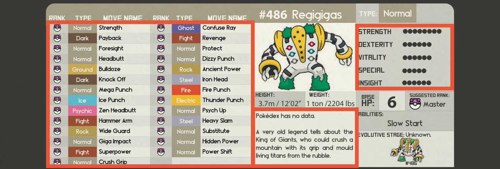

這個世界有許多神話與傳說，有些寶可夢至今仍籠罩在神秘之中。不過有一件事無庸置疑：傳說中提到的寶可夢，在力量上通常自成一格。
看到傳說或神話寶可夢的條目時，你會馬上注意到三件事：

牠們的起始能力值遠高於其他寶可夢，圖鑑資訊會寫明圖鑑沒有這隻寶可夢的實際資料，招式庫也通常都在非常高的階級。
這代表只有非常強大的訓練家才能正面對抗牠們，而牠們的傳說由你們正在進行的故事決定。
在你的故事裡，牠們不該是經常遇到、經常被收服的對象。牠們可以成為盟友，也能與玩家溝通，因為牠們的智力等於甚至高於人類。如果你的故事背景要加入傳說寶可夢，我們建議只專注在其中幾隻。
這個世界絕大多數的人終其一生都無緣見到牠們。圍繞著牠們的傳說與謎團，正是牠們有趣的地方，請善用這一點來豐富你的故事。